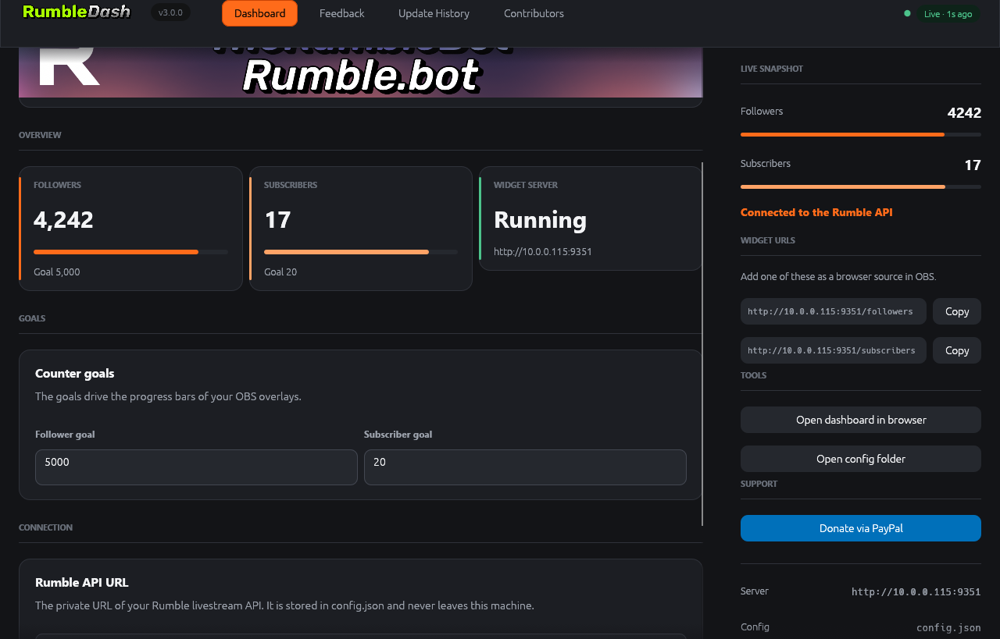

Live counters
Follower and subscriber counts are pulled from the Rumble API with a five second cache and land in the app and your widgets instantly.
RumbleDash is a native desktop dashboard for Rumble streamers. It polls your channel, charts your followers and subscribers against your goals and pushes them straight into OBS.

What you get
Follower and subscriber counts are pulled from the Rumble API with a five second cache and land in the app and your widgets instantly.
Set a follower goal and a subscriber goal, then watch the bars fill. The dashboard shows the percentage, the widgets show the bar.
Version 3 is written in Rust with egui: a charcoal interface, one ember accent and no browser in sight.
config.json is byte-compatible with
v2 and every v2 endpoint is preserved, so your
existing setup keeps working.
One zip. The desktop app, the standalone widget server, a sample config and the licence.